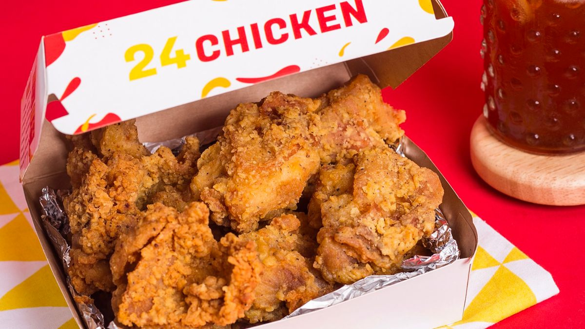
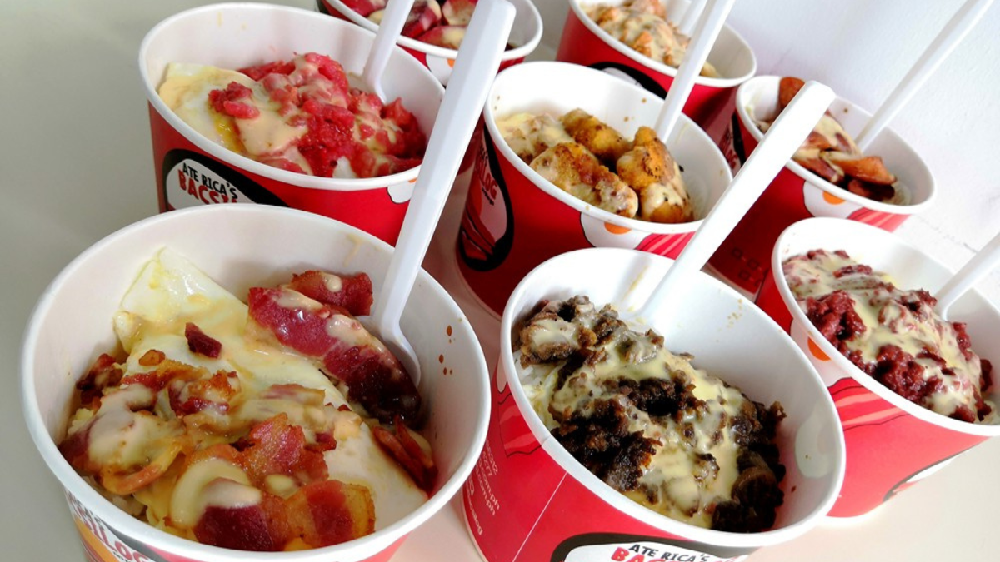
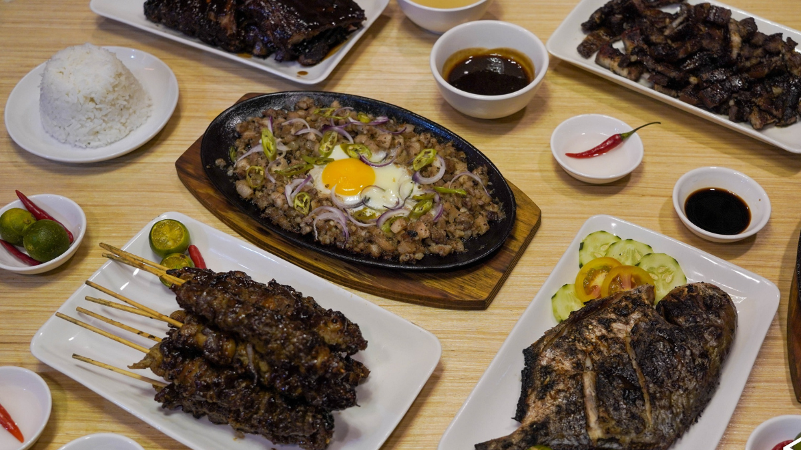
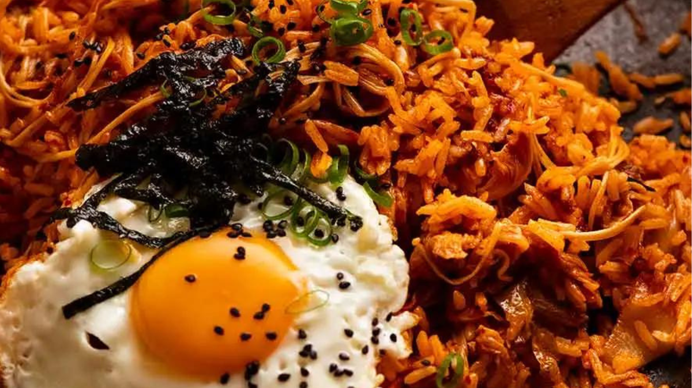

“If you're on the hunt for a chicken experience that transcends the ordinary, look no further than 24 Chicken”

₱
₱₱₱
•
Filipino
Rice Meal
“Ate Rica's Bacsilog lives up to its "Sauce Sarap" promise! Delicious, affordable Filipino comfort food with generous portions and...”
"Tucked away in a vibrant student district, Tomo Coffee is a haven for caffeine-craving students. I love it so so much!"

₱
₱₱₱
•
Filipino
Rice Meal
“
Tinuhog ni Benny is a haven for budget-friendly, delicious Filipino comfort food. The highlight is undoubtedly their namesake "tinuhog"...
”

“
If you're craving a taste of Korea in Manila, Hungry Seoul is definitely worth a visit. This casual restaurant...
”